Banche regionali italiane
Concentrazione geografica della rete sportelli: analisi HHI, province contigue e quote di mercato
Paolo Volterra ![]()
Il documento classifica le banche italiane con almeno 50 sportelli attivi in base al grado di concentrazione geografica della rete, misurato tramite l’Indice di Herfindahl-Hirschman (HHI) calcolato sia a livello regionale sia provinciale. La concentrazione geografica è trattata come prima dimensione osservabile di un concetto più ampio — la “territorialità bancaria” — che la letteratura accademica descrive come vettore multidimensionale non riducibile a una singola variabile. Vengono identificati quattro profili distinti, dal mono-regionale al nazionale, e per ciascuna banca regionale si stima il nucleo di province contigue che assorbe la quota prevalente della rete.
banche regionali, sportelli bancari, HHI, concentrazione geografica, Banca d’Italia, relationship lending
1 Inquadramento teorico: che cosa si intende per “banca territoriale”
La distinzione tra banca “regionale” o “territoriale” e banca “nazionale” non corrisponde ad alcuna categoria giuridica né a una classificazione di vigilanza codificata — non esiste, cioè, una definizione normativa analoga a quella di “banca significativa” (LSI/SI) nel framework della Vigilanza Unica. È una categoria economico-funzionale, costruita a partire da caratteristiche osservabili del modello di business.
La letteratura accademica converge su una conclusione: La territorialità non è una variabile. È un vettore. Si tratta di un fenomeno multidimensionale che si manifesta lungo almeno quattro assi distinti e non sostituibili tra loro:
1. Concentrazione geografica — dove opera la banca fisicamente, misurata dalla distribuzione degli sportelli (HHI, indice di Gini geografico, quota top-regione). Misura il dove, non il come.
2. Radicamento fisico — densità delle filiali rispetto a popolazione, superficie e imprese locali; copertura dei comuni nel territorio di riferimento. È la misura della prossimità fisica alla clientela, che condiziona la capacità di raccogliere informazione soft (Berger e Udell 2004; Calcagnini 2023).
3. Allineamento raccolta–impieghi — il rapporto tra i prestiti concessi in un’area e la raccolta raccolta nella stessa area. Una banca pienamente territoriale trasforma risparmio locale in credito locale; un LDR locale elevato segnala un ruolo di intermediazione netta verso il territorio (TODO 2021).
4. Distanza decisionale — la distanza tra il centro decisionale (sede direzionale o centro di delibera del credito) e il cliente o la filiale. Più è alta, meno è plausibile il relationship lending (Bonfim 2023; Petersen e Rajan 1994). Una banca può avere filiali concentrate in una sola regione ma decidere il credito da una sede distante: sarebbe geograficamente concentrata ma non “territoriale” in senso pieno. Alessandrini et al. (2009) formalizzano la distinzione tra distanza operativa (distanza geografica tra la filiale e il prenditore) e distanza funzionale (distanza tra il centro decisionale della banca e il mercato locale). L’evidenza italiana mostra che la distanza funzionale — cresciuta con il consolidamento bancario degli anni Novanta-Duemila — ha penalizzato in misura sistematica l’accesso al credito delle imprese nelle regioni periferiche, indipendentemente dalla presenza fisica di sportelli.
A queste dimensioni strutturali si aggiunge una componente comportamentale — il ricorso al relationship lending (credito basato su informazione soft, su relazioni durature con la clientela, su conoscenza diretta dell’imprenditore) — che è al tempo stesso effetto e causa del radicamento territoriale (Berger e Udell 2004; TODO 2023). Per l’Italia, Banerjee et al. (2017) documentano che le imprese con relazioni bancarie più intense hanno mantenuto livelli di investimento e occupazione significativamente più alti dopo lo shock Lehman, fornendo un test empirico diretto della causalità dal relationship lending alla stabilità reale del credito locale.
1.1 Il ruolo dell’HHI geografico
Questo documento si concentra sulla prima dimensione — la concentrazione geografica — misurata tramite l’HHI calcolato sulla distribuzione degli sportelli. La scelta è motivata dalla disponibilità di dati granulari e aggiornati (anagrafe GIAVA, snapshot marzo 2026), ma va letta con consapevolezza dei suoi limiti.
L’HHI misura dove opera la banca, non come opera. Una banca con HHI alto può non essere “territoriale” nel senso pieno del termine se le sue decisioni di credito sono centralizzate o se non intrattiene relazioni durature con la clientela locale. Viceversa, una banca con HHI moderato può avere un fortissimo radicamento relazionale nell’area di origine storica. Ai fini di questo documento, l’HHI geografico è trattato come proxy della prima dimensione e come punto di ingresso per analisi più articolate.
1.2 Il canale digitale scardina la territorialità?
La diffusione dell’home banking e dei canali digitali pone una domanda diretta: se il cliente può operare da remoto, la prossimità fisica della filiale — e con essa l’intera categoria di “banca territoriale” — perde rilevanza?
La risposta dipende da quale dimensione della territorialità si considera.
Sul fronte della raccolta e dei servizi di pagamento, la sostituzione è documentata e rilevante. Mariani e Others (2025) mostrano che tra il 2008 e il 2022 gli sportelli bancari italiani si sono ridotti del 40%, ma la quota di famiglie con almeno un deposito presso un intermediario ha aumentato, superando il 97%: prima grazie all’espansione dei servizi postali, poi — dal 2016 — grazie al digitale. La riduzione degli sportelli non si è dunque tradotta in un peggioramento dell’accesso ai servizi elementari. Arnaudo e Others (2025) confermano che una minore presenza fisica degli intermediari sul territorio spinge autonomamente i clienti verso l’interazione a distanza, ma mostrano anche che tale transizione è selettiva: l’adozione del digital banking è correlata positivamente al reddito e alla complessità delle relazioni finanziarie, e negativamente all’età — lasciando alcune fasce della popolazione structuralmente dipendenti dallo sportello fisico.
Sul fronte del credito alle imprese, la sostituzione è invece parziale e asimmetrica. Il nodo è epistemologico prima che tecnico: la filiale locale produce informazione soft — conoscenza diretta dell’imprenditore, del suo settore, del tessuto economico locale — che è per definizione non codificabile e non trasmissibile a distanza tramite algoritmi di scoring su dati transazionali (Petersen e Rajan 1994). Casado e Martínez-Miera (2025) documentano che la specializzazione locale delle banche riduce le probabilità di default per micro e piccole imprese attraverso una migliore qualità dell’informazione privata accumulata nel tempo: un effetto che scompare quando quella prossimità viene meno. Il digitale elabora informazione hard (storico dei pagamenti, bilanci, rating), ma non cattura la dimensione relazionale che distingue il relationship lending dalla concessione standardizzata del credito.
Narayanan et al. (2025) offrono una conferma indiretta di questa asimmetria su dati USA 2001–2023: le chiusure di filiali sono guidate dalla sensibilità ai tassi dei depositanti (proxy di sofisticazione finanziaria e adozione del digitale), mentre la domanda locale di prestiti — inclusi i mutui e i piccoli prestiti alle imprese — non spiega statisticamente le decisioni di chiusura. Il digitale libera le banche dall’ancoraggio fisico sul lato della raccolta, ma non sul lato del credito alle PMI.
Ne emerge una conclusione strutturata: il digitale erode la componente distributiva della territorialità (sportelli come punto di accesso ai servizi transazionali), ma non la componente informativa (sportelli come antenne per la raccolta di informazione soft). Le banche con alto HHI geografico che servono PMI e famiglie in aree a bassa literacy digitale — il profilo tipico delle banche T1–T2 meridionali — conservano un vantaggio relazionale che le piattaforme digitali non replicano. Il rischio è che la narrativa del digitale come sostituto universale dello sportello giustifichi chiusure che impoveriscono il territorio non di un punto di accesso ai pagamenti, ma di un presidio di informazione e credito relazionale.
2 Metodologia e fonti
La fonte primaria è la tabella SPORTELLI dell’anagrafe GIAVA di Banca d’Italia, che contiene l’elenco di tutti gli sportelli bancari attivi, con indirizzo, CAB e data di apertura/chiusura. Il campione è limitato agli sportelli attivi a marzo 2026 e alle banche con almeno 50 sportelli attivi. La soglia mira a escludere le BCC di dimensione micro il cui radicamento locale è per costruzione assoluto e non informativo ai fini della classificazione, ma introduce un secondo problema: include banche a modello non-territoriale (private banking, consumer finance) che operano su 14–16 regioni con HHI inferiore a 1.500 pur avendo meno di 100 sportelli. Nella pratica, la classificazione per tier (HHI ≥ 1.800 per T3) filtra queste banche automaticamente; restano tuttavia nel campione base utilizzato per i grafici aggregati. Si veda il punto 7 della sezione “Limiti metodologici”.
La georeferenziazione a livello provinciale avviene tramite la tabella CabIstat (codice CAB → codice ISTAT comune) e la classificazione NUTS 2021 di Eurostat (nuts_it_2024), che associa ogni comune a provincia (NUTS3) e regione (NUTS2). Il totale del sistema per la quota di mercato nazionale è tratto dalla serie TDB20207 (ENTE_SEGN=1100010, FENEC=30990009, LOC_SPORT='IT', riferimento dicembre 2025).
L’HHI è calcolato sia a livello regionale (21 unità NUTS2, incluse le province autonome) sia a livello provinciale (107 unità NUTS3):
\[HHI = \sum_{i=1}^{N} \left(\frac{s_i}{S} \cdot 100\right)^2\]
dove \(s_i\) è il numero di sportelli nell’unità \(i\) e \(S\) il totale degli sportelli della banca. Il valore varia tra 0 e 10.000 (massimo = monopolio geografico assoluto).
2.1 Limiti metodologici dell’HHI e alternative
L’uso dell’HHI basato sul conteggio degli sportelli è una scelta pragmatica, non la più accurata. La letteratura su concorrenza bancaria e geografia del credito offre diversi argomenti per una valutazione critica della metodologia.
1. Gli sportelli sono trattati come unità equivalenti. Un singolo sportello in una grande città e uno in un comune rurale pesano identicamente nel calcolo. In realtà, il loro volume di depositi e impieghi può differire di un ordine di grandezza. L’approccio standard nella letteratura empirica — adottato, ad esempio, dalle autorità antitrust USA nel calcolo dell’HHI bancario ai fini delle autorizzazioni M&A — utilizza i depositi locali (da FDIC Summary of Deposits per gli USA; dall’Archivio Sportelli di Banca d’Italia per l’Italia) come misura di peso alternativa. Un HHI ponderato per i depositi cattura meglio l’effettivo posizionamento competitivo della banca nel territorio. In questo documento la ponderazione per depositi non è disponibile a livello di singolo sportello; il conteggio degli sportelli costituisce dunque una misura di presenza fisica, non di penetrazione di mercato.
2. I confini NUTS sono amministrativi, non economici. Le unità di analisi usate — regioni NUTS2 e province NUTS3 — sono delimitazioni amministrative che non corrispondono necessariamente ai mercati locali del credito. Il mercato rilevante per una PMI non è la provincia dove è registrata la sede legale, ma l’area raggiungibile in tempi compatibili con una visita del gestore relazione: tipicamente un raggio di 20–50 km, che attraversa i confini provinciali. Duquerroy et al. (2022) definiscono il mercato locale a livello di arrondissement francese (equivalente a sub-provinciale) e mostrano che la specializzazione bancaria misurata a quella granularità è molto più netta che a livello dipartimentale. Narayanan et al. (2025) usano il county americano (analogo alla provincia) ma riconoscono esplicitamente che i mercati dei depositi si sovrappongono geograficamente. Nei contesti italiani il confine provinciale è convenzionalmente accettato come proxy (cfr. Banca d’Italia (2024)), ma alcune province sono eterogenee al loro interno (ad es. provincia di Roma, Torino, Milano).
3. Il minimo teorico dell’HHI non è zero. Con \(N = 21\) regioni NUTS2, un’ipotetica banca con distribuzione perfettamente uniforme avrebbe \(HHI = N \cdot (100/N)^2 = 10.000/N \approx 476\). Con \(N = 107\) province il minimo teorico scende a \(\approx 93\). Questo implica che le soglie di tier, pur definite empiricamente sulla distribuzione osservata, devono essere lette tenendo conto del minimo strutturale determinato dal numero di unità geografiche: una banca con HHI = 700 non è prossima allo zero assoluto, ma solo 1,5 volte il minimo teorico. Per reti di dimensioni diverse il confronto diretto dell’HHI grezzo può essere fuorviante.
4. Effetto dimensione e banca piccola. Le banche più piccole ottengono meccanicamente HHI più alti: una banca con 50 sportelli concentrati in un’area è quasi costretta ad avere HHI elevato, anche senza una scelta strategica di specializzazione. Viceversa, una banca con 500 sportelli che volesse mantenere un HHI T1 dovrebbe concentrare 415+ sportelli in una sola regione — impresa commercialmente difficile. Parte della correlazione negativa tra dimensione e HHI nel Figura 1 riflette questo meccanismo strutturale più che una scelta consapevole di diversificazione.
5. Livello entità vs. livello gruppo. Il calcolo è effettuato per ABI, non per gruppo bancario. Alcune banche classificate T1–T2 sono controllate da gruppi nazionali o esteri che consolidano reti complementari su tutto il territorio; in quel caso l’HHI dell’entità legale sovrastima la concentrazione del gruppo, che può avere presidio capillare tramite altre controllate. Viceversa, due banche T4 dello stesso gruppo che operano in aree diverse appaiono come entità separate nella classificazione ma possono condividere piattaforma creditizia e centri di delibera.
7. La soglia di inclusione a 50 sportelli mescola categorie eterogenee. Un’analisi di sensibilità sulla distribuzione delle 407 banche attive a marzo 2026 mostra che la soglia di 50 sportelli non corrisponde a un break naturale nella distribuzione per dimensione. Nel range 50–99 sportelli coesistono due popolazioni con logiche opposte: BCC mono- o bi-provinciali con HHI tra 7.000 e 10.000 (incluse per costruzione) e banche specializzate a distribuzione nazionale — private banking (Banca Generali 55 sportelli, HHI 962; Banca Aletti 55, HHI 1.894), consumer finance (Findomestic 82, HHI 1.038), banche captive (IBL 52, HHI 1.087) — con HHI sistematicamente inferiore a 1.500 nonostante reti di scala ridotta. Queste ultime non sono “banche regionali” in nessun senso funzionale e abbassano artificialmente l’HHI medio del campione nei grafici aggregati. Il problema è speculare per le soglie basse: nel range 30–49 sportelli restano escluse banche con profilo genuinamente regionale come la Cassa di Risparmio di Orvieto (ABI 6220, 41 sportelli, 3 regioni, HHI 4.456) e la Banca del Fucino (40 sportelli, 7 regioni, HHI 4.100). Una soglia più robusta sarebbe 75 sportelli, eventualmente combinata con l’esclusione esplicita delle banche a modello non-territoriale tramite classificazione ATECO/FENEC, oppure il mantenimento della soglia a 50 con il filtro implicito già operante — HHI ≥ 1.800 per il Tier 3 — che esclude automaticamente le banche nazionali specializzate dall’analisi qualitativa.
6. Snapshot vs. traiettoria. L’HHI è calcolato su uno snapshot (marzo 2026). Non cattura la velocità con cui una banca si sta de-regionalizzando (es. espansione rapida di una ex-cassa di risparmio) né la stabilità del presidio territoriale nel tempo. Una misura complementare sarebbe la deviazione standard dell’HHI su una serie storica o, più direttamente, il tasso di variazione della quota nella regione di origine degli ultimi cinque anni.
Alternative metodologiche. La letteratura propone misure complementari: l’indice di Gini geografico (misura la disuguaglianza della distribuzione degli sportelli tra province), l’indice di Ellison-Glaeser (confronta la distribuzione della banca con quella del sistema), l’entropia di Theil (misura quanto la distribuzione si avvicina all’uniforme), e la distanza media ponderata tra sportelli e sede (proxy della distanza operativa, cfr. Alessandrini et al. (2009)). Queste misure colgono sfaccettature diverse della “territorialità geografica” e possono essere più informative dell’HHI in casi limite — ad esempio, distinguono tra una banca con un’unica regione fortissima ma presenza uniforme altrove (HHI basso, Gini basso) e una con due poli dominanti separati geograficamente (HHI basso, Gini alto).
Ai fini di questo documento, l’HHI rimane la misura principale per confrontabilità con la letteratura e per semplicità interpretativa; i limiti sopra esposti motivano la complementarietà con la quota nella regione di origine, il numero di province contigue e la mappa geografica illustrativa.
3 Classificazione delle banche per profilo geografico
Sulla base dell’HHI regionale emergono quattro profili distinti, separati da soglie naturali nella distribuzione:
| Tier | HHI regionale | Profilo | Criterio empirico |
|---|---|---|---|
| T1 | ≥ 7.000 | Mono-regionale | > 83% degli sportelli in una sola regione |
| T2 | 3.500 – 7.000 | Fortemente regionale | > 55% in una regione, espansione limitata al territorio contiguo |
| T3 | 1.800 – 3.500 | Regionale con espansione | Radice regionale riconoscibile, presenza a regioni limitrofe |
| T4 | 900 – 1.800 | Ex-regionale / radicata | Origine regionale storica, rete ormai pluriregionale |
| T5 | < 900 | Nazionale | Distribuzione omogenea sull’intero territorio |
Il grafico seguente mostra la posizione di ogni banca nello spazio dimensione/concentrazione. Le banche più grandi tendono ad avere HHI più basso per effetto della diversificazione territoriale, ma esistono eccezioni rilevanti: la Banca Popolare di Sondrio, con 493 sportelli, mantiene un HHI di oltre 6.000, segno di una strategia di sviluppo deliberatamente ancorata alla Lombardia.
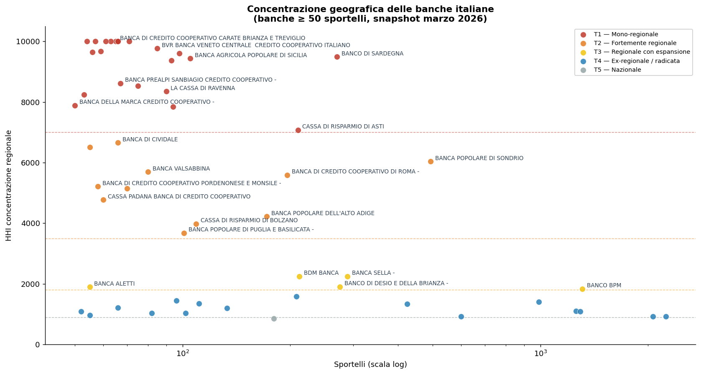
Figura 1: Concentrazione geografica della rete sportelli (HHI regionale vs numero di sportelli in scala logaritmica). Ogni punto è una banca con ≥ 50 sportelli attivi; la posizione verticale misura il grado di concentrazione, quella orizzontale la dimensione della rete. Le linee tratteggiate separano i tier.
4 Banche regionali: profilo T1–T3
4.1 Graduatoria per HHI
Le banche classificate T1–T3 (HHI ≥ 1.800) sono quelle per cui la dimensione geografica è un tratto identitario della strategia distributiva, non un semplice residuo storico. La Figura 2 le ordina per grado di concentrazione decrescente; all’interno di ciascuna barra è riportata la regione dominante.
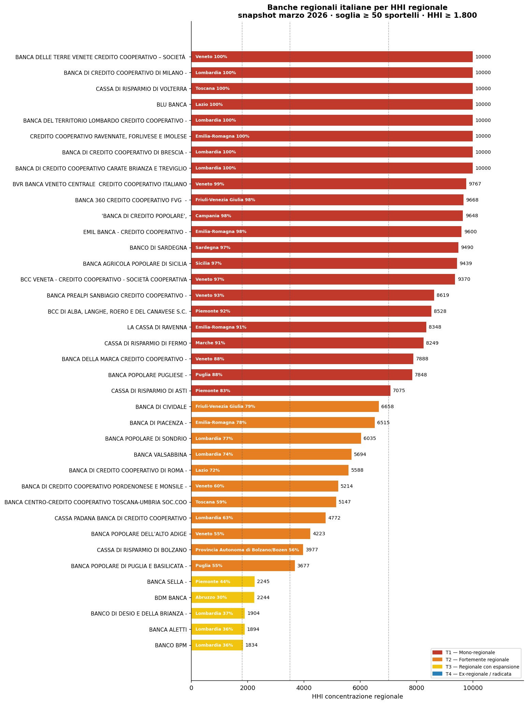
Figura 2: Banche regionali italiane ordinate per HHI regionale. Rosso = T1 mono-regionale, arancione = T2 fortemente regionale, giallo = T3 regionale con espansione. Il valore HHI e la regione di concentrazione principale sono riportati su ogni barra.
Quattro banche spiccano nel Tier 1 con concentrazioni quasi assolute:
Banco di Sardegna (ABI 1015): 270 sportelli, il 97% in Sardegna. La presenza peninsulare si riduce a poche filiali di rappresentanza. È il caso più nitido di banca regionale per vocazione storica e missione istituzionale; l’insularità è una determinante strutturale della concentrazione geografica, non una scelta strategica liberamente reversibile.
Banca Agricola Popolare di Sicilia (ABI 5036): 105 sportelli, il 97% in Sicilia. Nata come istituto agricolo di servizio al territorio, ha mantenuto un perimetro operativo pressoché insulare anche nel ciclo di consolidamento degli anni 2000-2020.
Banca Popolare Pugliese (ABI 5262): 94 sportelli, l’88% in Puglia (HHI ~7.800). Con un cluster contiguo che copre il 100% della rete in 10 province e una quota di mercato nazionale dello 0,49%, è l’unica banca popolare continentale classificabile come mono-regionale. La concentrazione riflette una vocazione storica di servizio alle PMI e alle famiglie del Salento e del barese, mantenuta nonostante le pressioni aggregative.
Cassa di Risparmio di Asti (ABI 6085): 210 sportelli, il 83% in Piemonte con una propaggine in Lombardia. Caso tipico di cassa di risparmio che ha resistito alle pressioni aggregative conservando il presidio del territorio storico piemontese.
Nel Tier 2 si collocano banche con una regione dominante e un’espansione limitata verso province contigue, spesso motivata da logiche di bacino economico piuttosto che da ambizioni di scala nazionale:
Banca Popolare di Sondrio (ABI 5696): 493 sportelli, massima dimensione tra le banche regionali analizzate, con il 77% in Lombardia. La presenza a Roma (10%) riflette il posizionamento nel segmento private e il presidio della clientela istituzionale, non una strategia di diversificazione territoriale.
BCC Roma (ABI 8327): 196 sportelli tra Lazio (72%) e Veneto (18%), quest’ultima quota derivante da operazioni straordinarie che hanno portato all’incorporazione di realtà cooperative venete.
Volksbank – Banca Popolare dell’Alto Adige (ABI 5856) e Cassa di Risparmio di Bolzano / Südtiroler Sparkasse (ABI 6045): entrambe operano nel bacino bilingue Trentino-Alto Adige/Veneto; la loro distribuzione riflette la continuità economica tra Bolzano, Trento e le province venete di confine più che un’espansione strategica.
Banca Popolare di Puglia e Basilicata (ABI 5385): 101 sportelli tra Puglia (55%) e Abruzzo (21%), con una copertura che segue la dorsale adriatica meridionale e attraversa il confine regionale seguendo logiche di bacino.
Nel Tier 3 si colloca una banca che, pur con un HHI inferiore alla soglia T2, mantiene una vocazione geografica nettamente definita:
- BdM Banca (ABI 5424): 212 sportelli distribuiti su 9 regioni e 27 province (HHI 2.244). La rete presenta una caratteristica rara nel campione: la perfetta bipartizione tra Abruzzo e Puglia, ciascuna con il 29,7% degli sportelli. Le province guida sono Bari (BA, 17,9%) e Teramo (TE), poli di un asse adriatico-meridionale che si estende verso Campania (16,5%) e Basilicata (13,2%). Nel complesso il 93,4% degli sportelli si trova nel Mezzogiorno (198 su 212), la quota più elevata in valore assoluto tra le banche del campione con più di 50 sportelli. Il cluster di province contigue copre 26 province e cattura il 99,5% della rete: nonostante l’HHI relativamente basso (che riflette la distribuzione bifocale), la rete è geograficamente coerente e quasi interamente concentrata nell’arco adriatico-meridionale. L’espansione verso Marche (3,8%), Lazio (2,4%) e con una sola filiale in Lombardia segnala un presidio di servizio, non una logica di diversificazione territoriale.
4.2 Distribuzione regionale disaggregata
La Figura 3 mostra per ogni banca regionale la composizione della rete per regione, ordinate per HHI decrescente. È immediato distinguere le mono-regionali (barra quasi monocolore) dalle banche T3 con una distribuzione più articolata su più regioni.
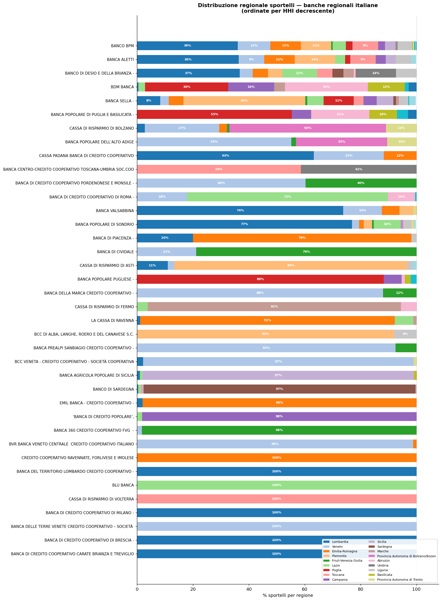
Figura 3: Distribuzione regionale degli sportelli per ciascuna banca T1–T3. Le regioni con quota < 5% non sono etichettate. L’ordinamento verticale riflette l’HHI decrescente.
5 Le banche territoriali nel Mezzogiorno
Il Mezzogiorno (Abruzzo, Molise, Campania, Puglia, Basilicata, Calabria, Sicilia e Sardegna) concentra 4.233 sportelli bancari a dicembre 2025, pari al 22,9% del totale nazionale a fronte di circa il 34% della popolazione italiana. La quota è rimasta stabile nell’arco 2015–2025: il calo decennale degli sportelli è stato del -34% nel Sud (da 6.424 a 4.233) e del -38% nel Centro-Nord (da 22.944 a 14.245), ma il divario fisico per abitante rimane strutturale.
Il problema non è solo quantitativo. Del Prete et al. (2022) documentano che nel 2019 il rapporto tra prestiti bancari alle imprese non finanziarie e il valore aggiunto era pari al 28% nel Mezzogiorno e al 49% nel Centro-Nord. Il credito bancario rappresenta quasi la sola fonte di finanziamento esterno per le imprese meridionali — che hanno minore accesso ai mercati dei capitali e minore diversificazione delle fonti — rendendo il presidio bancario territoriale una variabile critica e non soltanto descrittiva della struttura finanziaria del Sud. Alessandrini et al. (2009) hanno già segnalato che l’aumento della distanza funzionale — la distanza tra i centri decisionali degli intermediari e le filiali periferiche — ha penalizzato strutturalmente l’accesso al credito nelle regioni meridionali nel ciclo di consolidamento degli anni Novanta-Duemila.
5.1 Banche a vocazione meridionale nel campione T1–T3
Delle banche analizzate, quattro hanno una presenza esclusiva o quasi esclusiva nel Mezzogiorno:
| Banca | ABI | Sportelli totali | di cui nel Mezzogiorno | % |
|---|---|---|---|---|
| Banco di Sardegna | 1015 | 270 | 264 | 97,8 |
| Banca Agricola Popolare di Sicilia | 5036 | 105 | 103 | 98,1 |
| Banca Popolare Pugliese | 5262 | 94 | 94 | 100,0 |
| Banca Popolare di Puglia e Basilicata | 5385 | 101 | 101 | 100,0 |
| BdM Banca | 5424 | 212 | 198 | 93,4 |
Le cinque banche presidiano complessivamente 760 sportelli nel Mezzogiorno, pari al 18,0% della rete meridionale. Il restante 82,0% fa capo a istituti con sede e governo nel Centro-Nord o a banche a scala nazionale, in misura crescente per effetto del processo di consolidamento.
Del Prete et al. (2022) mostrano che nell’arco 2009–2019 le M&A bancarie hanno ridotto il numero di intermediari con sede nel Sud in misura sistematica e che l’effetto sui prestiti alle PMI meridionali è stato mediamente più intenso rispetto al Centro-Nord — soprattutto per imprese piccole (meno di 20 addetti) o finanziariamente fragili. Il risultato è interpretato non come effetto del trasferimento del centro decisionale, bensì come amplificazione di fragilità strutturali delle imprese meridionali che rendono più probabile la contrazione del credito in presenza di uno shock negativo sull’intermediario.
In questo quadro, le banche T1–T2 con vocazione meridionale svolgono un ruolo che trascende la semplice presenza fisica: sono punti di erogazione del credito con governance locale, radicati in territori dove la densità di banche con centro decisionale prossimo è strutturalmente bassa. La loro concentrazione geografica — l’HHI elevato che le qualifica come “mono-regionali” o “fortemente regionali” — è quindi, in questo contesto, anche una misura della capacità del territorio di mantenere interlocutori bancari con informazione locale e distanza funzionale contenuta.
6 Concentrazione sub-regionale: l’HHI provinciale
L’HHI calcolato a livello regionale maschera la struttura interna alla regione dominante. Una banca con il 70% degli sportelli in Lombardia ma distribuiti uniformemente tra le province lombarde ha un profilo molto diverso da una che concentra quel 70% nella sola area metropolitana milanese. Per cogliere questa dimensione si ricalcola l’HHI a livello delle 107 province NUTS3.
Il confronto tra le due misure (Figura 4) individua due pattern distinti:
Banche sopra la diagonale (HHI provinciale > HHI regionale): la concentrazione è ancora più acuta di quanto appaia guardando alle sole regioni. È il caso tipico delle banche con un fortissimo radicamento in una singola provincia di origine storica — Volksbank nella provincia di Bolzano, CR Asti nella provincia di Asti. Queste banche hanno una presenza regionale apparentemente “moderata” ma in realtà quasi mono-provinciale.
Banche sotto la diagonale (HHI provinciale < HHI regionale): la rete è distribuita su più province all’interno della regione dominante. È il caso della Banca Popolare di Sondrio, presente capillarmente in tutta la Lombardia, o di BCC Roma, che copre province sia laziali sia venete.
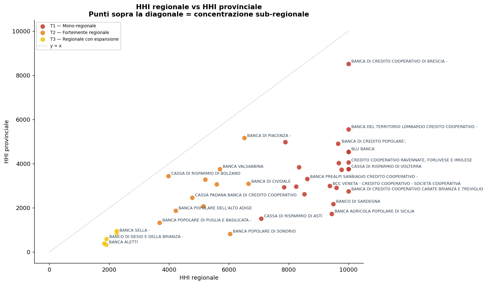
Figura 4: HHI regionale (asse x) vs HHI provinciale (asse y). La linea tratteggiata è la bisettrice: i punti sopra la diagonale indicano banche con concentrazione sub-regionale più acuta di quanto suggerirebbe il solo HHI regionale.
7 Cluster di province contigue
Un elemento qualitativo rilevante è verificare se la presenza territoriale di una banca regionale forma un blocco geograficamente contiguo — un insieme di province connesse che costituisce il nucleo del mercato servito — oppure è frammentata in aree non collegate.
A tale scopo si costruisce un grafo di adiacenza tra le 107 province italiane (due province sono adiacenti se i poligoni NUTS3 corrispondenti condividono un confine, secondo il GeoJSON Eurostat NUTS 2021) e si ricerca, per ogni banca, il sottoinsieme connesso di province contigue che massimizza la quota di sportelli catturata, tramite un algoritmo greedy-BFS che espande il cluster dalla provincia seed (quella con più sportelli) verso le adiacenti più ricche.
La Figura 5 mette a confronto la quota catturata dal cluster contiguo con quella delle sole top-2 regioni. I punti sopra la diagonale indicano banche la cui rete contigua attraversa confini regionali — il caso più evidente è BPPB, il cui presidio adriatico-meridionale forma un cluster coerente che include province pugliesi, abruzzesi e molisane, superando il perimetro della sola Puglia.
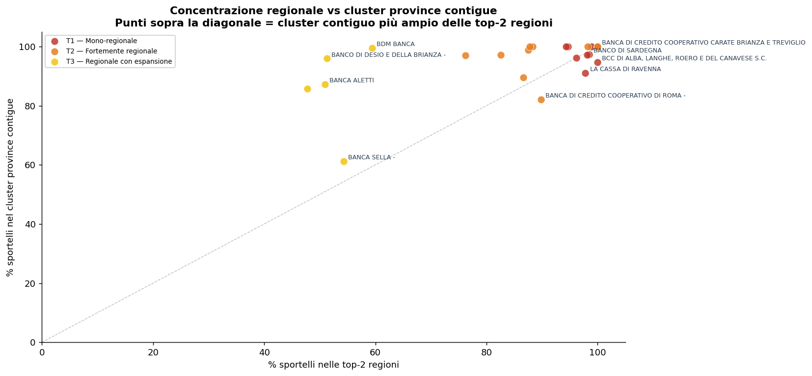
Figura 5: % sportelli nel cluster di province contigue (asse y) vs % nelle top-2 regioni (asse x). Punti sopra la bisettrice: il cluster contiguo cattura più sportelli di quanto non facciano le prime due regioni prese separatamente, segnalando una logica di presidio per bacini economici trans-regionali.
Per le banche mono-regionali T1, il cluster contiguo coincide quasi per definizione con la regione stessa (le province sono tutte contigue entro l’isola). Per le banche T2–T3 il cluster rivela spesso una logica di presidio basata su bacini economici che non seguono i confini amministrativi regionali — il dato più utile per analisi di trasmissione del credito e di rischio territoriale concentrato.
8 Mappe della rete per le banche più concentrate
Le mappe seguenti mostrano la distribuzione provinciale degli sportelli per le banche T1 e T2 (HHI ≥ 3.500). Il titolo di ogni mappa riporta: sportelli totali, quota di mercato nazionale, numero di regioni e province presidiate, dimensione del cluster contiguo e quota di rete che esso cattura.
8.1 Tier 1 — Mono-regionali
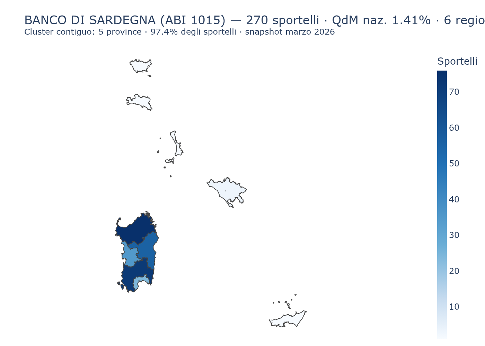
Figura 6: Banco di Sardegna (ABI 1015) — presidio quasi esclusivo della Sardegna con oltre 270 sportelli.
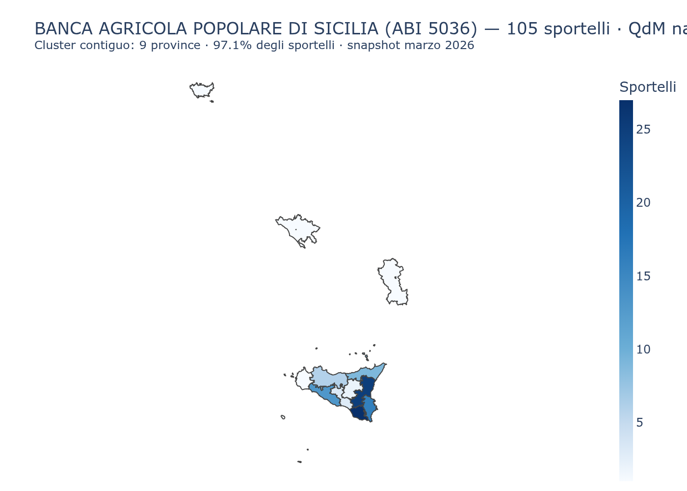
Figura 7: Banca Agricola Popolare di Sicilia (ABI 5036) — presenza concentrata in Sicilia, con pochissime eccezioni.
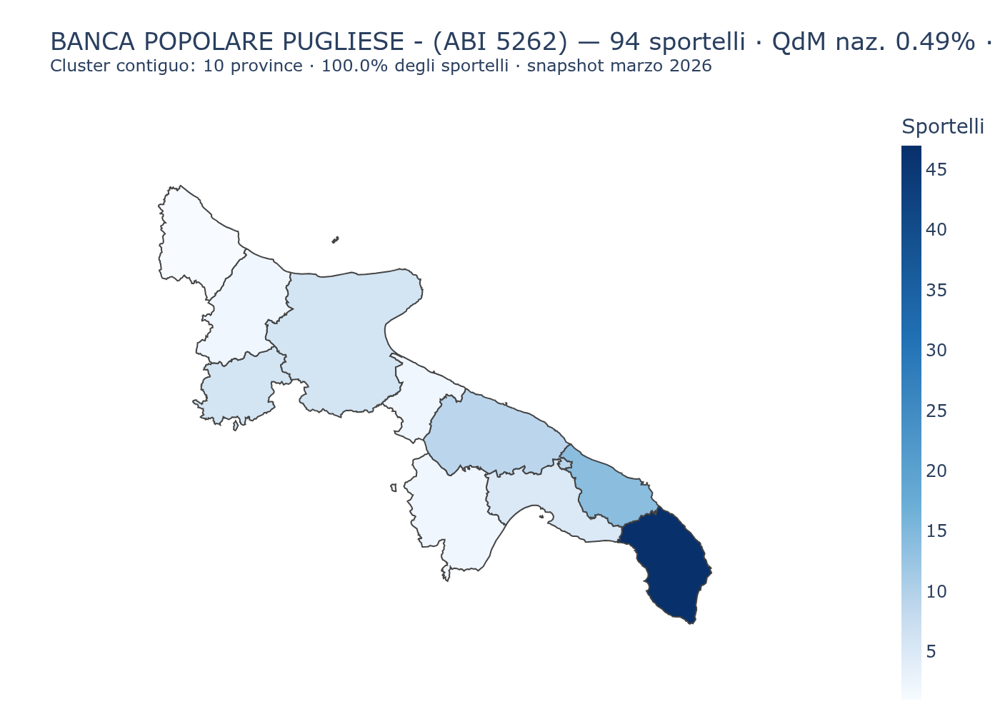
Figura 8: Banca Popolare Pugliese (ABI 5262) — 94 sportelli, 88% in Puglia (HHI ~7.800). Unica banca popolare continentale mono-regionale; cluster contiguo al 100% in 10 province pugliesi.
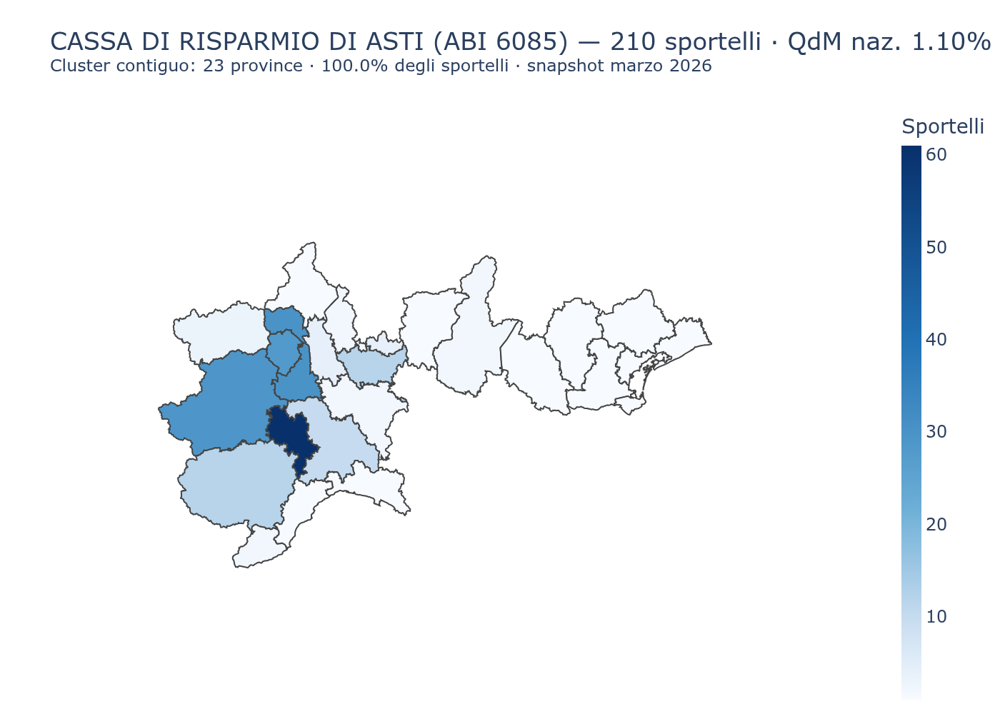
Figura 9: Cassa di Risparmio di Asti (ABI 6085) — forte radicamento piemontese (83%) con una propaggine in Lombardia.
8.2 Tier 2 — Fortemente regionali
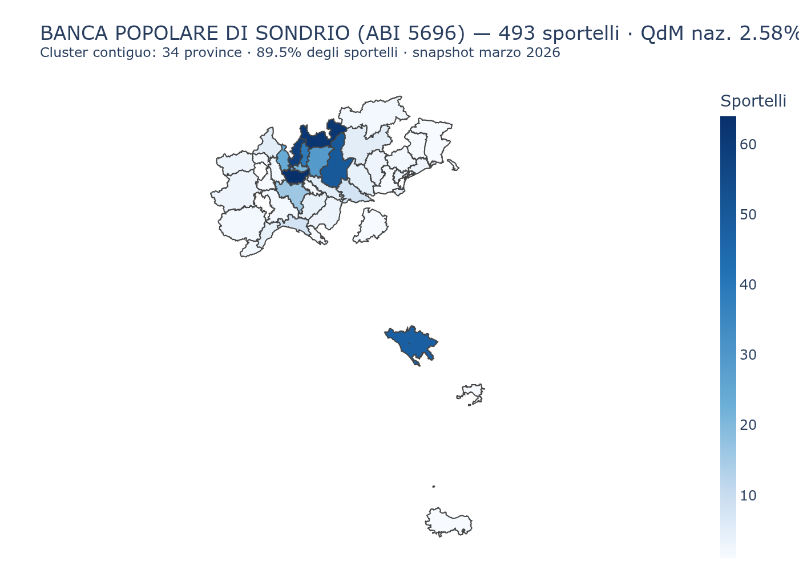
Figura 10: Banca Popolare di Sondrio (ABI 5696) — la più grande tra le banche regionali; rete capillare in Lombardia con presidio private a Roma.
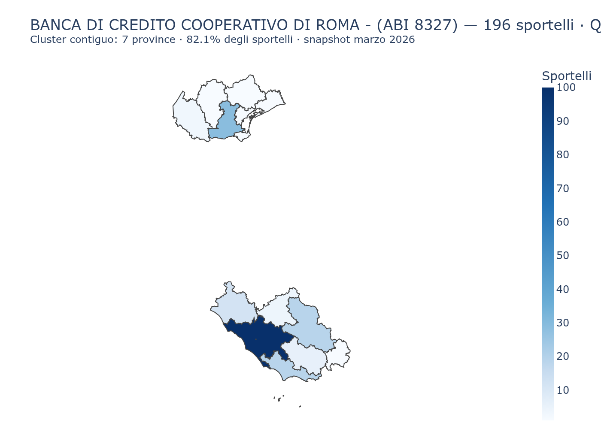
Figura 11: BCC Roma (ABI 8327) — prevalenza laziale con cluster veneto derivante da incorporazioni.
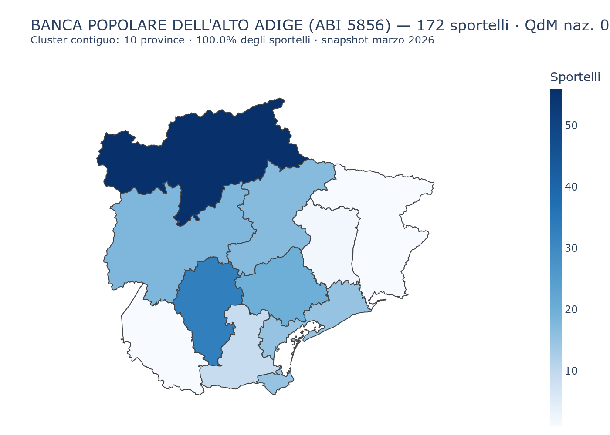
Figura 12: Volksbank – Banca Popolare dell’Alto Adige (ABI 5856) — bacino bilingue Bolzano/Veneto.
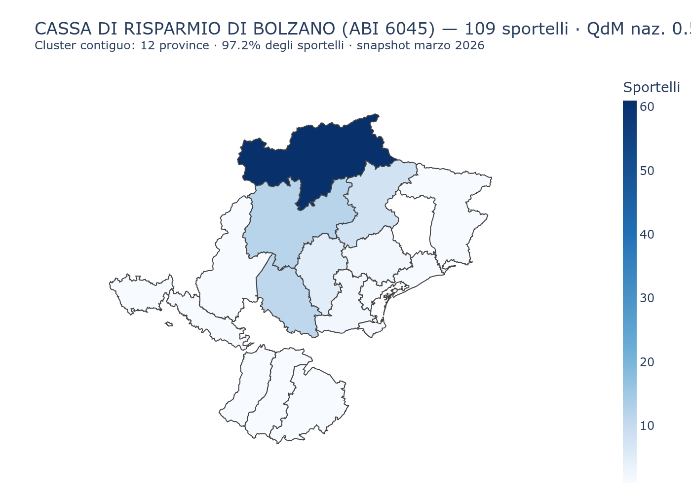
Figura 13: Cassa di Risparmio di Bolzano / Südtiroler Sparkasse (ABI 6045) — presidio della provincia di Bolzano con espansione veneta.
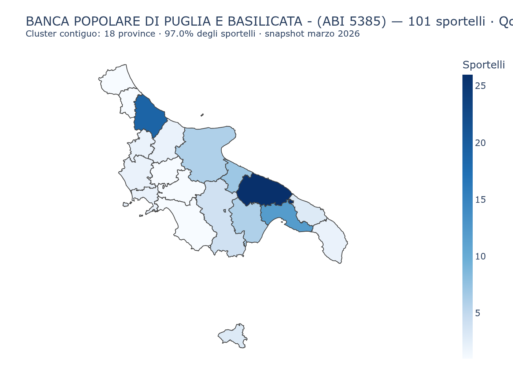
Figura 14: Banca Popolare di Puglia e Basilicata (ABI 5385) — presidio adriatico-meridionale che attraversa i confini regionali.
8.3 Tier 3 — Regionale con espansione
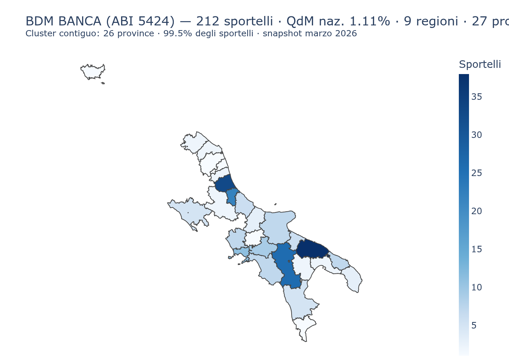
Figura 15: BdM Banca (ABI 5424) — 212 sportelli, 93,4% nel Mezzogiorno. Bipartizione Abruzzo/Puglia (29,7% ciascuna); cluster di 26 province contigue (99,5% della rete).
9 Sintesi e prospettive
9.1 Cosa dice la concentrazione geografica
La classificazione per HHI consente di identificare con rigore quali banche possono essere considerate “regionali” in senso geografico e quali hanno invece già compiuto la transizione verso un modello pluriregionale o nazionale. Tre osservazioni emergono dall’analisi:
Le banche T1 sono casi strutturalmente vincolati: Banco di Sardegna e BAPS riflettono specificità geografiche (insularità) che le rendono casi particolari. La loro concentrazione non è il risultato di una scelta strategica liberamente reversibile.
Il Tier 2 è il nucleo delle banche “regionali per scelta”: Banca Popolare di Sondrio, Volksbank e CR Asti hanno mantenuto un’identità regionale nonostante vent’anni di pressione alle aggregazioni. Il loro HHI elevato non è un residuo storico ma un posizionamento deliberato nel segmento delle PMI e delle famiglie del territorio.
Il cluster contiguo è più informativo dell’HHI regionale per le banche T2–T3: BPPB e BdM Banca mostrano una logica di presidio per bacini economici trans-regionali che l’HHI regionale coglie solo parzialmente.
9.2 Cosa la concentrazione geografica non dice
Come anticipato nell’inquadramento teorico, l’HHI misura il dove, non il come. Per passare da una classificazione geografica a una valutazione compiuta della territorialità bancaria servirebbero almeno altri tre blocchi di informazione:
Allineamento raccolta–impieghi per area (LDR locale): quanto del risparmio raccolto in una provincia viene reinvestito nella stessa provincia. I dati Banca d’Italia (
TFR,TDB) permettono di costruire questa misura a livello NUTS3.Distanza decisionale: la distanza media tra sede direzionale e filiali (o clienti), che misura la plausibilità del relationship lending. Derivabile dall’anagrafe GIAVA incrociata con i dati di geocodifica.
Struttura della clientela: la quota di credito verso PMI e microimprese locali, che distingue il modello relazionale da quello standardizzato. Disponibile nei dati
BSIBeTRIper i principali segmenti.
Un indice composito di territorialità che integrasse queste dimensioni — concentrazione geografica, radicamento fisico, allineamento raccolta–impieghi, distanza decisionale — costituirebbe uno strumento analitico robusto per confrontare banche, misurare l’evoluzione nel tempo del sistema, e valutare l’impatto territoriale delle politiche di credito.
9.3 Nodi concettuali connessi
La concentrazione geografica degli sportelli — l’oggetto di questo documento — è un punto di ingresso in un sistema di concetti collegati che ne ampliano la portata interpretativa.
Desertificazione bancaria: il duale dell’HHI. L’HHI misura dove le banche sono; il suo complemento è dove non ci sono affatto. All’inizio del 2026 circa 3.470 comuni italiani (il 43,9% del totale) non contano nemmeno uno sportello bancario attivo: il 39,9% nel Centro-Nord, il 52,4% nel Mezzogiorno. I casi estremi sono il Molise (83,8%), la Calabria (74,3%) e la Valle d’Aosta (74,3%). Le banche T1–T2 con alto HHI presidiano alcune di queste aree critiche, ma la copertura complessiva rimane lacunosa. La “desertificazione bancaria” è già tracciata come progetto di approfondimento (cfr. task #26 di progetto) con mappatura a livello di singolo comune (EBA Banking Stakeholder Group 2024).
Gerarchia organizzativa e perdita di informazione soft. Perché una grande banca con una filiale locale non può semplicemente replicare l’information advantage di un intermediario piccolo e radicato? Stein (2002) dimostra che l’informazione soft — non verificabile, non codificabile — non sopravvive ai passaggi gerarchici interni: un direttore di filiale che conosce il cliente non riesce a trasmettere credibilmente quella conoscenza a un credit officer di sede lontana. Ne consegue che la distanza funzionale non è solo un problema logistico, ma un vincolo strutturale alla qualità del processo deliberativo del credito. Questo fornisce il fondamento teorico per cui l’HHI geografico e la distanza funzionale di Alessandrini et al. (2009) vanno misurate entrambe, e non sono intercambiabili.
Sviluppo finanziario locale e crescita economica. Guiso et al. (2004) hanno dimostrato — su dati provinciali italiani degli anni Novanta — che un maggiore sviluppo finanziario locale nel periodo iniziale causa in misura significativa: tassi di crescita del PIL superiori, maggiore accesso al credito per le famiglie e le imprese, e livelli più bassi di corruzione. Il canale causale è la presenza di banche con radici locali capaci di ridurre le asimmetrie informative. Questo colloca l’analisi dell’HHI su un terreno di rilevanza per la politica economica: la concentrazione geografica degli sportelli non è solo un dato strutturale di un settore, ma una variabile con potenziali effetti sullo sviluppo dei territori.
Il paradosso della concentrazione: territorialità e rischio. Lo stesso indice HHI usato per classificare le banche come “territoriali” è anche una misura di rischio di concentrazione geografica. Una banca con HHI 9.000 — il 90% degli sportelli in un’unica regione — ha un’esposizione sistemica al ciclo economico di quella regione: un deterioramento del tessuto produttivo locale si trasmette direttamente alla qualità del portafoglio crediti. Il Banco di Sardegna e la BPP operano in regioni con dinamiche demografiche e produttive specifiche; la loro forza in termini di radicamento è al tempo stesso la loro principale fonte di rischio idiosincratico.
Il trade-off competizione–relationship lending. Petersen e Rajan (1994) mostrano che la relazione banca–impresa richiede un investimento iniziale in informazione che la banca può recuperare solo se mantiene un certo potere di mercato locale. Più il mercato è contendibile, meno le banche investono in relazioni di lungo periodo. L’HHI geografico elevato delle banche T1–T2 crea spesso, per effetto collaterale, una struttura di mercato locale a bassa concorrenza — che è condizione necessaria per il relationship lending, ma porta con sé il rischio di tassi più elevati e selezione meno efficiente. La distinzione tra “potere di mercato come precondizione del relationship banking” e “potere di mercato come rendita ingiustificata” è una delle frontiere aperte della letteratura e della policy.
Complessità economica locale e accesso al credito. Basile et al. (2024) mostrano — su dati provinciali italiani 2008–2019 — che la complessità economica del territorio (la varietà qualificata del tessuto produttivo locale) riduce le barriere all’accesso al credito, con effetti di spillover spaziale significativi. Il meccanismo è che in economie più complesse le banche possono selezionare i progetti con maggiore precisione, riducendo il razionamento. Questo suggerisce che il vantaggio informativo delle banche territoriali non è puramente endogeno alla banca, ma è co-prodotto con la struttura produttiva locale: una banca regionale inserita in un distretto industriale strutturato accumula informazione di qualità superiore rispetto a una banca con identico HHI in un territorio economicamente semplice.
9.4 Evidenze recenti e agenda di ricerca
Due filoni recenti arricchiscono l’interpretazione dei dati presentati. Sul versante della specializzazione locale, Casado e Martínez-Miera (2025) mostrano — su dati spagnoli — che la specializzazione geografica e settoriale delle banche riduce la probabilità di default per micro e piccole imprese attraverso una migliore qualità dell’informazione privata accumulata: un meccanismo coerente con il profilo ad alto HHI delle banche T1–T2. Sul versante del declino degli sportelli, Narayanan et al. (2025) (USA 2001–2023) documentano che la chiusura di filiali è guidata principalmente dal valore della deposit franchise — la capacità di raccogliere depositi sotto il tasso di mercato — e non dalla domanda locale di credito: un risultato che pone la concentrazione geografica delle reti bancarie nel quadro di una strategia di difesa del margine di raccolta piuttosto che di presidio del territorio. A livello europeo, il rapporto EBA Banking Stakeholder Group (2024) segnala che il deterioramento dell’accesso fisico ai servizi bancari è diventato un tema esplicito di policy, con implicazioni per l’inclusione finanziaria delle aree a bassa densità di sportelli.
10 Riferimenti
Vedi anche
- Le banche e il FTA IstatLe banche locali e regionali costruiscono le loro strategie creditizie e commerciali su una conoscenza del territorio che spesso si ferma ai dati di Centrale Rischi, bilanci depositati e segnalazioni di vigilanza.
- Poste e banche nei comuni italianiUna mappa della copertura dei servizi di prossimità: comuni con sportelli bancari, uffici postali, entrambi o nessuno.
- Le esportazioni delle regioni italianeNel primo semestre 2026 le esportazioni italiane crescono in valore, ma il risultato nazionale aggrega traiettorie regionali e settoriali molto diverse.